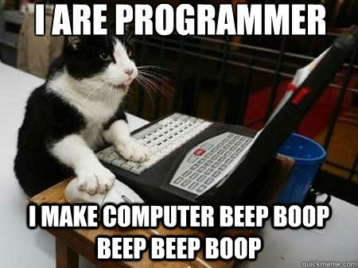

MariHacks Hacker Booklet
Welcome to the Hacker Booklet! This booklet will help you prepare for MariHacks. Although the booklet is mainly oriented towards beginners, experienced hackers might also want to take a look.
This booklet contains short tutorials as well as numerous references to lead you in the right direction. Want to make a website but do not know where to start? Just jump to the web development section. Not sure if machine learning is the way to go? Read up on it in our booklet. Need help with APIs? We got you covered!

The First Steps
Taking your first steps into the coding world can be stressful and even dangerous if you get stuck in an nested loop.
To ensure your safety and enjoyment we have created a quick and essential getting started guide. Whether you are a veteran coder or just getting started we recommend that you take a look at our first steps guide.
Programi-What?
Programming
Programming: provide (a computer or other machine) with coded instructions for the automatic performance of a particular task.
Seems simple enough yet programming is incredibly important and most importantly nerds everyone agree that it is cool. Coding can be separated into a couple categories and languages – our booklet covers the main ones.
To code, you will use a coding language – not english, but something that the computer will understand. In this language, you will tell the computer exactly what you want it to do, and unlike a dog, the computer will always listen. Want to make a program that plays “Never Gonna Give You Up” by Rick Astley at random times throughout the day? Terrible taste but you can definitely do it!
Algorithms
Moving on from memed songs, let’s learn about algorithms. An algorithm is a function that is effective for a specific goal. You can think of an algorithm as a function that takes some input, and processes that input to produce some sort of output.
Let’s say you wanted to guess my favourite number. I don’t know of any function in programming called FavNum() so we’ll have to write our own algorithm to solve it. For simplicity sake, let’s assume my number is between 0 and 100. And since I am a busy person, we want to minimize the number of questions that I have to answer.
One way to get my number, is to simply go through all the numbers from 0 to 100 and ask me if that’s my number. Unfortunately, I don’t have all day, and let’s just say I would not be very happy if you had to ask me all those questions.
What you might want to do instead is ask me if my number is bigger than or smaller than 50 (i.e. the halfway point). If I answer that it is bigger, then we’re down to numbers 51-100, and if I answer that it is smaller, then we’re down to 0-49. Either way, we cut the eligible amount of numbers in half! Now, we simply have to ask me once again if my number is bigger or smaller than the midpoint of the range and after a couple iterations, we will find out my favourite number! Or you could have simply asked me for my favourite number… it’s 73! This is an example of how a function can use a more efficient algorithm.
The algorithm of repeatedly cutting a list of numbers in half to find a value is called binary search. There are many other cool ones that you can learn about here. Algorithms are useful for solving a wide range of problems. A good grasp of algorithms can come in handy if you run into an interesting problem, but is not necessary if you're just starting off.
Where to Write Your Code
Sadly, code can't be written in a Microsoft Word document. Well… I guess it can, but if you do, the full force of Reddit will come personally to your house and put you out of your misery.
You could write your code in a text editor or in an integrated development environment (IDE). While a text editor offers some useful tools like syntax highlighting and automatic indentation, an IDE typically has a lot more features (including really good tools to help you find errors in your code).
Integrated Development Environments
IDEs are editors with many extra utilities to help in programming. There are many to choose from, but a great IDE to start with is Visual Studio Code, or VSCode for short. Through plugins, VSCode has great support for a multitude of languages.
Python: A Good Language to Start With
The Python programming language is currently one of the most popular languages in the scientific world; it is used in many fields such as chemistry, physics, biostatistics, data science, and many others. It is also used by programmers working with machine learning and web development. Python can be used for quickly solving most problems.
Because of its simplicity, Python is also a really good language for beginners. Many schools have started adopting it as a language of choice for introductory courses, including MIT.
Installation
Python can be installed from here. You will also need an editor in which to write python code in. You can find more in the previous section.
Learning Python
If you want to learn as much Python as possible before the event start, reading the Think Python 2nd edition book will give you a very thorough rundown of the language. Read it carefully and do the exercises, and you should be more than ready for the hackathon!
On the day of the event, there are many resources available to quickly get started with Python. For beginners, going through the Codeacademy tutorial is a good start. If you already know a language or two, you can start by trying to automate repetitive tasks with Automate the Boring Stuff. The Official Python Documentation also contains a detailed description of all the functions available in the language.
For a complete list of resources available for both beginners and experienced programmers, check out this link.
Dive Into Your Projects
Did you come up with an awesome idea? Do you know exactly what you want to do but are not exactly sure how you will accomplish it?
In this section we have outlined the basics of web and game development as well as some basics on databases. There is also a resource for learning new programming languages.
Web Development
Building a website or a web application is no simple task. It’s a process with a whole lot of steps. However, fret not, there are plenty of tools to help you in this process. The task of a web developer can be mainly divided into 2 parts: front-end and back-end. Front-end refers to the part of the website that the visitor can see and interact with (the client), while back-end refers to the server-side mechanisms that interact with the databases and other cloud services (the server).
A great resource that can help you get started with web development is Free Code Camp. To have a solid foundation in web development, doing the HTML5 and CSS (5 hours) as well as the Basic Javascript (10 hours) courses would be a great start. Once you finished those, you can look into other courses such as Bootstrap and jQuery to sharpen your skills. There are also some courses on Node.js and React.js available.
A great resource that can help you get started with web development is Mozilla Developer Network. To have a solid foundation in web development, working through and up to the HTML, CSS, and JavaScript basics is a great start. Once you finished those, you can look into other tutorials such as Bootstrap and jQuery to sharpen your skills.
HTML (HyperText Markup Language)
HTML is the most fundamental language in web development. When you visit a website, your browser downloads the .html file from the server and displays the content from the HTML code. Basically, the point of a browser is to read HTML code (as well as CSS and Javascript).
HTML is very beginner-friendly, as all you need to start coding in HTML is Notepad and a browser. If you want to do web development, HTML is a must-know. Here's a guide that will teach you all you need to know about this language.
CSS (Cascading Style Sheets)
CSS is used to complement HTML. While HTML is great for displaying the content of a webpage, CSS focuses on the presentation of that content. Let’s say you have a paragraph of text on your website. Maybe you want it to be blue, to have a Calibri font with size 56, to show text shadow and to grow bigger with an animation when you hover it. CSS got you covered. To use CSS, you can either write the CSS code directly in the HTML code or in a separate file.
JavaScript
JavaScript is extremely popular and versatile programming language. Traditionally, JavaScript is used along with HTML and CSS for front-end development. However, there are many frameworks for JavaScript out there which simplify and extend its implementation. With the right framework, Javascript can be used almost everywhere, front-end and back-end. That’s why it’s a good idea to get familiar with this language before the hackathon.
There are plenty of resources to learn vanilla JavaScript on the web that are available with a simple Google search. Here is a good place to start with. You can also try W3Schools.
Learn Front-End
Front-end of a website is defined as the user interface, as in what the user interacts with directly and how it looks from a stylistic point of view. When getting started, it's always preferable to stick with simple HTML and CSS. However, once you gain experience you can start using more advanced JavaScript libraries to create more complex user interfaces.
For a simple HTML page, once the page has been loaded, the content of the can be changed using JavaScript. However, when building very complicated user interfaces, doing operations on the HTML manually can be unwieldy. This is where UI libraries such as Vue.js and React.js come in.
Vue.js
Vue.js is one such JavaScript library for building complex interfaces.
React.js
Another such library is React.js. For a static HTML page, once the page has been loaded, the content of the page doesn’t change anymore. React.js allows the content of your web page to change over time, which is key in user interactivity. If you want to build a web application, React.js can be a very useful tool for you.
If you want to start learning React.js, the official website has a great tutorial on how to build a simple tic-tac-toe game with it. It’s a good place to start. There are also many more intermediate and advanced guides on the official website.
Learn Back-End
Back-end is what the user can not see but it is essential to the functioning of a website, such as the databases and complex logic and algorithms running in the background. The back-end of an app hosts all the business logic and processing that happens behind the app, such as handling accounts and logins.
Flask (Python)
If you prefer using Python, then Flask is a great library to use. Flask makes creating a simple back-end server quick and easy.
Express (Node.js)
Traditionally, Javascript is used for client-side development: the Javascript code is embedded in HTML code and interpreted by the client’s browser. However, Node.js is a runtime environment which allow us to run server-side Javascript. This means that it is possible to create a server and interact with databases, all that with the familiar Javascript! Node.js uses a package manager called npm, which allows user to install external packages and modules very easily.
To transform your computer into a server and run Node.js code on it, you have to first install the runtime environment onto your computer. You can download it from their official website. To run a Node.js application, you have to use the command prompt and navigate to the path of the folder that contains the script you created. Then, you can use the node <filename>.js command to initiate the script. This will create a local testing server, with the address “localhost:<port number>”, that will run your script. A great beginner’s guide here by W3Schools. If you are planning on using external modules, here’s a beginner’s guide on how to use npm.
Then, you can use a nodejs library called Express to create a back-end server.
App Development
There are many ways to approach developing an app. Normally, apps would have to be developed for each platform (i.e. Android, iOS) individually. However, some tools exist that allow for writing code once and running it on both platforms. A popular tool for doing so is React Native.
React Native
If you have experience with JavaScript and React, then you might prefer using React Native.
- Getting Started guide.
Game Development
Making games from scratch is hard. For example, simply implementing the physics behind a game takes a lot of work. Thankfully, there are game engines that do a lot of the work for us. There are many, many engines, but here are three very popular ones.
GameMaker
GameMaker is by far the simplest and most beginner friendly game engine that we have on the list. While it only supports 2d games it has very good appeal to new game developers. It is very easy to pick up and almost anything you find on the internet can be used as graphics assets. The built in language which is based on Java has very good documentation and amazing built in functions.
If this is your first time developing a game then GameMaker is recommended. To get started, take a look at the following link
Unity
Unity is one of, if not the most popular game engine out there. It supports 2d and 3d games and comes with an impressive amount of free assets. While unity does not look nearly as good as Unreal it is much easier to run on laptop computers and is a great choice for small nifty little games.
Learn to create games with Unity through the Roll-a-ball tutorial. This tutorial will teach you the basics of C#, game physics and Unity tools here.
Unreal Engine 4
As mentioned above, Unreal is graphically superior to Unity however it is much more resource intensive. Unreal also offers a block diagram based coding approach and is superior for making more or less mainstream games. We recommend it to slightly more experienced game devs who are looking for a graphically stunning product.
To get started we recommend visiting the unreal video tutorial page here.
Databases
Most beginner projects will not require the use of a database as all pertinent information can be stored locally. However if you are looking to gather large amount of information and process it, a database will be integral. A database is simply defined as a structured set of data that is stored on a computer and accessible in several different ways, such as reading and writing data, or performing more complex operations on it.
There are many types of databases, but the most common are SQL databases. Alternatives which don't use SQL are called "NoSQL" databases.
Get Started with SQL
SQL is a programming language designed specifically for managing databases, and is thus well suited for this purpose. Many SQL databases exists, such as PostgreSQL and MariaDB.
NoSQL
For most situations, SQL databases are well suited. However, in other cases, NoSQL databases may be used. A popular NoSQL database is MongoDB, but there are many others.
Other Programming Languages
Learning a new language is always challenging, whether you are experienced or not.
Codeacademy offers straightforward code-as-you-go tutorials for many different languages, including Python, Java, JavaScript, HTML, etc. You can find their complete catalog here.
Java
Java is a widely used language in software development. It is used to create web servers, business applications, and games (like Minecraft). It is especially popular because the same (compiled) code will run the same way on any platform, because it will be run inside a platform called the Java Virtual Machine (JVM), that the developers of the language have created specifically for each category of computer.
To get started, you have to download the latest version of JDK, aka Java SE Development Kit here, which contains everything you will need. You can then start coding in Java with your preferred code editor; if you are not sure what’s best for you, start with Eclipse. Learning how to use Java might be confusing, so reading Eclipse’s FAQs might be helpful
If you want to learn as much Java as possible before the event start, reading the Think Java Version 6 book will give you a very thorough rundown of the language. Read it carefully and do the exercises, and you should be more than ready for the hackathon!
If you are looking to practice, take a look at w3resources
Swift
Swift is the official language to create iOS apps, and it is supported by Apple. It is not particularly hard to learn, but not that easy to master. If you are looking to become an apple wizard (not in the sleeping beauty way), we recommend that you to get acquainted with developing apps in general before diving into the fruit bowl. Apple’s official tutorial is a good way to start.
C/C++
C and C++ are probably some of the more challenging languages for beginners – it’s even difficult for those with a basis in Python or JavaScript. It is, however, very widely used to create video games, craft robots, write computer programs, and interact directly with your computer. It is also much faster than Python, JavaScript or Java.
In order to run C code, you need to compile your program before using it. This means that your computer will transform your code into machine-readable instructions, and then you can run these instructions. Here are the resources needed to compile your code:
Implement Cooler Stuff!
Have you guys ever seen a male to male usb type A cable? A simple cable that allows you to plug one computer into another. Little did you know, but that's how computers teach each other!! (In reality plugging one computers USB into another will only generate a whole plethora of problems and can even fry the motherboard if not properly protected).
In reality, machine learning is the idea that a machine/algorithm can get better every time it is run by learning something either from the user or just a data set.
We also have a section on Wolfram|One!
Version Control and Github: Collaborating and Sharing Code
When developing software, programmers need some place to store their code and the changes between each version. They also need to be able to share it with others in order to collaborate with teammates or have others use it. This is what so-called version control systems do. They simplify organising code and managing changes. The most popular VCS is git. Though projects don't necessarily require git, it can make collaborating siginificantly easier. So, if you are working as part of a team, you should definitely use git.
Code is stored in a repository, often on online services. Think of it as Dropbox or Google Drive, but for code. The most popular service for storing and sharing code is GitHub. As the name suggests, GitHub uses git to push and pull changes from its servers. It also offers a range of facilities which will make your life easier. Thus, we suggest starting off with GitHub.
To learn more, see the git handbook by GitHub.
Using GitHub
To start off, you and any of your friends will need to create a GitHub account. Then, you can start learning the basics of GitHub's interface in their "Hello World" guide introducing GitHub's flow. After creating a repository, add any friends you want to work with on the repository by going to "Settings"->"Collaborators", and inviting their usernames.
Next, you will need a git client in order to manage your repository from your system. If your are comfortable working in a terminal, then you can simply use the command line. However, if you are a beginner, then we suggest starting off with a simpler client, such as GitHub for desktop, or, for something slightly more complicated, GitKraken.
If you use GitHub for desktop, then on the GitHub repository page on your browser for your project, you can click on on the big green “clone or download” button and click on “open in desktop”. Now the repository should appear in GitHub for desktop and you will be able to click the “fetch” and then “pull” button to get up to date. Next you can click on the little blue text in the center to open the repository in explorer.
Now all changes made in this folder will be tracked and saved on GitHub even if multiple people are working at the same time. In fact to save your changes you have to “commit” them by adding a name to the changes and then clicking “fetch” or “push” or “pull” (its all the same button!)
Advanced Version Control
Three is much, much more to git than is covered here. If you have experience using git and want to learn how to perform more complex operations, see "Pro Git".
Machine Learning
Google Cloud APIs
If you want a taste of what Machine Learning does before diving right into it, the Google Cloud Platform is a good place to start. The Cloud platform is a web Application Program Interface ( web API), which you can think of as a service that let you “ask” something to the Google servers, and they “reply” to you in a certain way. In our case, the action of asking is called a get request, and their reply will be given as a .json file (which resembles a JavaScript object, or Python Dictionary). To read more about web requests, read it here.
To get started with Google Cloud Platform, you have to first create an account. You will get $300 in credits when you start if you enter your billing information. However, you will still have access to some of the features without it. The how-to explain the process well.
Once you have setup your account, you can start playing with the APIs! Here are the four Machine Learning APIs Google is currently offering:
Once you have setup everything, you can do some pretty cool projects right away! Either a mood detector, or a text summarizer, or a voice assistant, it is up to you to decide.
Installing Machine Learning Packages
Installing a Machine Learning Package can be really easy, or really hard, depending on what you are using. Some of the more general package, such as Numpy and Sci-kit Learn, will only take a few minutes to install once you downloaded the packages. Other packages, such as Tensorflow or Torch, might take a while, since you might have to install other packages on which they depend on, and fix sometimes obscure bug related to your own computer. It is therefore advised that, if you plan on working on a Machine Learning project, to install what you plan to use before starting, so you wouldn’t spend hours and hours trying to get started. As for Keras, since it is built on top of Tensorflow (in other words, Keras makes it easier to use), you obviously need to install Tensorflow and all the dependent packages before getting started with Keras.
Installing Anaconda and Jupyter
Anaconda is a Python scientific package manager, which means that it comes with many packages and libraries useful for Statistical analysis, Data Science, and as you would’ve guessed, Machine Learning. In addition, it also includes a “notebook” called Jupyter, which lets you fragments of Python code instead of having to run the whole file, which is what a normal text editor do.
To download Anaconda, you can go here
To learn more about JJupyter
Getting Started with Numpy and Scikit-Learn
If you have installed Anaconda, you can find Numpy and Scikit-Learn already installed. Otherwise, you can find the installation link on their respective website.
Numpy is a mathematical package that focus on computing multi-dimensional arrays, which are efficient versions of Python lists. If you have taken Linear Algebra, you can perform a lot of lightning-fast matrix computations using this library.
Scikit Learn is a machine learning library that include most of the popular models and algorithms, and can compute them very efficiently. It is significantly easier to use than Tensorflow or Torch, and includes a lot of algorithms that are not in those two libraries. In fact, it is beginner-friendly enough that you can dive directly in the website, and follow tutorial here and there to create your first Machine Learning model, even if you don’t have prior knowledge.
Official Numpy Website.
Official Scikit Learn Website.
Beginner Implementations: Keras
If you want to implement Neural Networks right away, Keras is exactly what you need. It wraps another API (e.g. Tensorflow, Torch), and makes creating neural networks much quicker and simpler. However, if you want to use Keras and Tensorflow more seriously, you will need to learn about neural networks and deep learning. Here is a compilation of all the tutorials available to get started. Many of them are outdated, so it is normal if you get errors while running the code. The only way to solve this would be to modify the code so that it would work with the new version (which requires a lot of Googling and Stack Overflow).
TensorFlow
TensorFlow is probably the most useful library if you want to create advanced projects with deep learning and neural networks. However, getting started with TensorFlow is definitely not easy, and requires you to have a strong background in programming and machine learning. However, for the purpose of the hack, it is definitely possible to find great open-sourced programs posted on GitHub (Google is your best friend here), and implement those pre-trained models.
You can download TensorFlow on the official website.
If you want to learn more about how to use TensorFlow, you can take the Udacity course created by the Google developers here.
Kaggle
Kaggle is an important Data Science platform that provide tutorials, data sets and competitions using Machine Learning. You could use it to find the data sets you want to use for your hack, or inspire your project from one of the projects available.
You can get started with their Titanic competition, which is the most beginner-friendly here
Kaggle’s founder explains very well the best way to get started with the platform here.
Wolfram|One
What is Wolfram|One?
Wolfram|One is the world's first fully integrated cloud-desktop hybrid, integrated computation platform. The core of our technology stack is the Wolfram Language, which builds on three decades of development, and represents a new direction in programming-- that happens to be absolutely ideal for hackathons.
The Wolfram Language is optimized to make it easy to write small amounts of code that do spectacular things. As a language, it has an immense amount of knowledge about the world built into it, allowing for maximum automation.
If you've used Mathematica in school, you already know a lot about the Wolfram Language. But regardless, it's very easy to learn. If you want to get a sense of how quick it is to do interesting things, check out Tweet-a-Program.
How to Use It?
Wolfram Research is pleased to sponsor MariHacks2018 by providing access to our latest technology, Wolfram|One! For complimentary access to our development platform and the Wolfram API, click here.
This URL will take you to a sign-in page and prompt you to log in using your Wolfram ID. If you don't already have a Wolfram ID, you'll be prompted to create one using an active email address. Once logged in, you will see in the Downloads section which platforms of the software you have access to, with their accompanying activation keys. Please download the desktop version to your machine, boot up the application and use the associated activation key when prompted. This will grant you full access for 30 days from your activation date.
When you access Wolfram|One in the cloud for the first time, you can create a new notebook or load a pre-made Things to Try live notebook, which is designed to guide you through neat things you can immediately compute in the Wolfram Language.
You can use Wolfram|One to create instant web apps and APIs, or to deploy to mobile. The Wolfram Language is also bundled on the Raspberry Pi, where you can connect directly to hardware, including Arduino etc.
The fastest way to get an API up and running is detailed in the extensive Documentation Center available to you alongside your notebook: simply click the section in the documentation labeled Cloud and Deployment and select Instant APIs to access a handy how-to guide to help get you started.
To view your account details-- including your available Cloud Credits and Cloud storage-- or re-download Wolfram|One, visit this page.
We've put together a general page of resources for hackathon participants.
And there's an online book with exercises.
Wolfram Internship?
Interested in Wolfram mentorships or internships? Check out our opportunities.